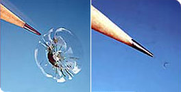

КАК ПРОИСХОДИТ ПРОЦЕСС РЕМОНТА СКОЛОВ ИЛИ ТРЕЩИН
- ▪ Осматривается скол или трещина и производится очищение его поверхности от внешнего загрязнения и остатков стекла
- ▪ С помощью специального оборудования снимается внутреннее напряжение в центре скола
- ▪ Под давлением в место скола или в полость трещины закачивается полимер. Он обладает высокой степенью проникновения в микротрещины и имеет такую же степень преломления света, что и стекло. В большинстве случаев, скол или трещина исчезнут на ваших глазах!
- ▪ Отремонтированное повреждение на лобовом стекле подвергается воздействию ультрафиолета, в результате чего полимер отвердевает.
- ▪ Восстановленная поверхность полируется.
ДОПОСЛЕ
